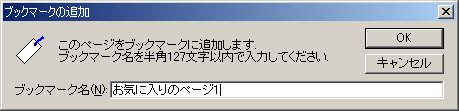
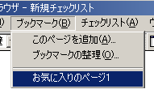

ブックマークは、お気に入りのカタログページに「しおり」を付ける機能です。
ブックマークに登録しておくことで、そのページに簡単にジャンプすることができるようになります。
ブックマークは、メインメニューの「ブックマーク」から利用できます。
メインメニューの「ブックマーク」→「このページを追加」で、現在の表示ページをブックマークに追加することができます。

ダイアログが表示されますので、このブックマークに付けたい名前を半角127文字以内で指定し、OKボタンを押してください。
追加したブックマークは、メインメニューの「ブックマーク」に、追加時に指定した名称で表示されます。

選択すると、そのページにジャンプします。
メインメニューの「ブックマーク」→「ブックマークの整理」で、ブックマークの名称変更・削除・グループ化（サブメニュー化）ができます。
詳しくは「ブックマークの整理」を参照してください。